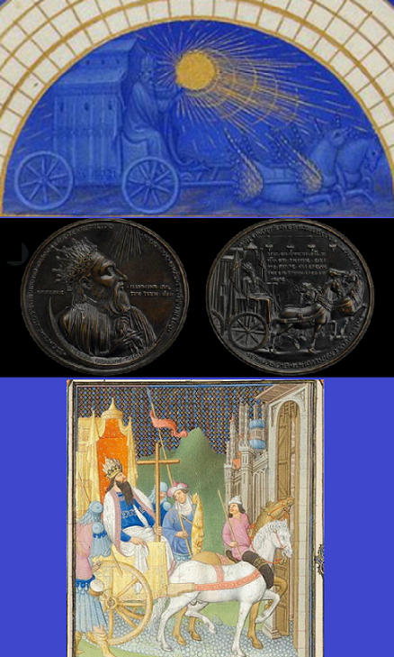

Apollon et Heraclius
Le calendrier des "Très riches heures du Duc de Berry"
Un rapprochement possible avec les "Vêpres des Grenouilles?"

|
Calendrier solaire à cycles lunaires Le calendrier qui occupe les 16 premiers folios des "Très riches heures du Duc de Berry" est sans doute l'ensemble de miniatures le plus remarquable de toutes les enluminures du Moyen Âge. Il permet au lecteur de repérer la prière correspondant au jour de l'année et à l'heure de la journée. Chaque mois est illustré par une miniature en pleine page accompagnée d'une page de texte qui donne, de gauche à droite, pour chaque jour : le nombre d'or astronomique (calcul entre les calendriers solaire et lunaire), la "lettre dominicale", le rang dans le calendrier julien, le saint du jour, la durée d'ensoleillement en heures et minutes et un "nouveau nombre d'or", décalé par rapport au nombre d'or astronomique traditionnel de la première colonne. En astronomie, on appelle "nombre dor" le rang dune année dans le "cycle de Méton" qui comporte 19 années et permet de faire coïncider, à quelques heures près, cycles lunaires et cycles solaires. Il existe alors 19 nombres dor (de 1 à 19) et chaque année possède son nombre dor. Les informations astronomiques Chaque miniature est surmontée d'informations astronomiques inscrites dans 7 demi-cercles: les numéros des jours dans le mois, les lettres des premières lunes (litterae primationum lunae), qui est une application du nouveau nombre d'or astronomique, surmontées dans le demi-cercle supérieur d'un croissant de lune. Le 4ème demi-cercle contient la mention « Primaciones lunae mensis» (« première lune du mois de) », le nom du mois et le nombre de jours ("dies"). Le demi-cercle au-dessus contient des signes du zodiaque selon la position des astres et de la terre au début du xve siècle. C'est ainsi que l'équinoxe de printemps, début du signe du bélier, est fixée au 12 mars. Les noms des signes sont inscrits dans le demi-cercle au-dessus. Le dernier demi-cercle donne les degrés de longitude contenus dans chaque signe zodiacal, à la manière des astrolabes. Quatre des miniatures (Janvier, Avril, Mai, Août) restent sans inscription. Ce calendrier, avec son nouveau nombre d'or, application de la proposition de réforme du calendrier faite par Pierre d'Ailly, date de 1412 et préfigure le futur calendrier grégorien. Le Char du soleil Au centre du demi-cercle est représenté à chaque fois le dieu Apollon dans son char. Cette représentation est inspirée du revers d'une médaille byzantine acquise par le duc de Berry, mentionnée dans un de ses inventaires. La scène représentée est décrite dans la Légende dorée : l'empereur byzantin Héraclius, qui rapportait la vraie Croix à Jérusalem (630), était sur le point d'entrer dans la ville lorsque les portes se fermèrent miraculeusement devant lui. Un ange apparut pour le réprimander d'avoir voulu pénétrer, monté sur un char, là où Jésus était entré à pied. La scène est plus amplement représentée dans les "Belles Heures" du Duc de Berry, fol. 156. Dans les "Très riches heures" l'empereur-Apollon tient dans ses mains, au lieu de la Croix, un soleil rayonnant dont l'aspect diffère sur chacun des 12 tableaux: - janvier: étoile à 8 branches lévogyres, 5 arcs de cercles concentriques, 2 "comètes" touchant le sol, aux queues parallèles dirigées vers le haut à gauche - février: disque plein, un cercle complet, 2 comètes - mars: etoile à 10 branches dextrogyres, 2 comètes - avril: étoile à 7 branches dextrogyres, 3 comètes - mai: étoile à 7 branches lévogyres, 2 comètes - juin: étoile à 8 branches dextrogyres, 2 comètes - juillet: étoile à 9 branches dextrogyres, 3 arcs de cercle, 2 comètes - août: étoile à 8 branches lévogyres; 2 comètes - septembre: roue à jante épaisse à 10 rayons droits, 2 comètes - octobre: disque plein, 2 comètes - novembre: roue à jante et moyeu épais à 7 rayons; 2 comètes - décembre: disque plein et étoile superposés, 2 comètes. |
 De haut en bas: Frontispice astronomique de Janvier ("Très riches Heures") Médaille d'Héraclius Enluminure des "Belles Heures" |
Rapprochement avec les "Vêpres des grenouilles". M. Boidron remarque (p.510) que les "Très riches heures" présentent les travaux agricoles en une série de 12 enluminures: bêcher la terre, épandre le fumier, tailler la vigne, tondre les moutons, chasser au faucon, fenaison, moisson, battre le grain, semer, vendanger, glandée de porcs, tuer et saler le cochon. Il note quelques correspondances avec les motifs des Vêpres sans toutefois respecter l'ordre des séries: référence au vin (transport par bateau); références aux animaux: porcs, moutons, chasse; scènes de battage. Les anneaux de Marie Ce réseau complexe de correspondances, s'étendrait-il à l'aspect du soleil, mot féminin en breton (an heol)? On aurait alors un début d'explication des mystérieux "Ur biz [da varc'hañ] da Vari..., Daou viz [da varc'hañ] da Vari... Tri biz etc." (un doigt [à enfourcher] à Marie, deux..., trois doigts...). Narcisse Quellien (Chansons et danses des Bretons p. 195-196) traduit ces passages mystérieux par "Un (deux, trois) doigt(s) à immobiliser (vouer) à Marie...". Le verbe "marc'hañ" signifie au propre "enfourcher un cheval". Il signifierait que Marie doit placer successivement trois doigts de façon à ce qu'ils se chevauchent. Mais plusieurs autres versions (G. Milin) ont "tri bizou arc'hant da Vari" (trois anneaux d'argent à Marie) ou "Ur biz arc'hant da Vari" (un "biz" d'argent à Marie) que Luzel traduit logiquement par "Un anneau d'argent à Marie". De Penguern a entendu "Tri biz arc'hant da c'hoari" (trois "biz" d'argent pour jouer). Il semble donc que la version non corrompue de ce passage soit une série "transstrophique", unique en son genre, allant d'un à trois anneaux d'argent (qui appartiennent ou à remettre) à Marie, avec une confusion entre "biz", le doigt, et "bizou", l'anneau, origine du français "bijou". On peut tenir pour certain que "marchañ", enfourcher, est le résultat d'une mauvaise transmission du mot "arc'hant", argent. Les halos du soleil Sur la médaille d'Heraclius et l'enluminure des "Belles Heures", le chariot de l'empereur est doté d'une tige horizontale portant 4 lampes à huile. Elles ont, bien entendu, disparu sur l'enluminure des "Très Riches Heures" et elles ont fait place à un multiple halo solaire en janvier et juillet. Ces halos apparaissent, à certaines conditions, dans le ciel autour du Soleil (ou de la Lune). Ils sont engendrés par la réfraction ou la réflexion de la lumière par des cristaux de glace en suspension dans l'atmosphère (nuages cirriformes, poudrin de glace). Les météorologues distinguent plusieurs phénomènes optiques visibles autour du soleil: petit halo, grand halo, arcs de Parry, arcs tangents, arc circumzénithal, arcs infralatéral et supralatéral, auxquels s'ajoutent la Colonne lumineuse et des taches lumineuses appelées parhélie, paranthélie ainsi qu'un cercle parhélique. Certains d'entre eux pourraient correspondre aux "comètes" dessinées sur les enluminures. Seul le petit halo est fréquent. Le grand halo l'est beaucoup moins et les autres phénomènes sont très rares. Les mêmes observations peuvent être faites autour de la lune (on remplace le suffixe "hélie" par sélène" pour les désigner). Météorologie Ce qui est certain, c'est que la présence de halo(s) renseigne sur le temps qu'il fera. " Puisqu'il est nécessaire d'avoir des nuages pour la formation des phénomènes de halos, leur présence indique que l'air est humide en altitude. Comme les cirrus ne sont pas des nuages de pluie, les halos peuvent se former même s'il fait beau. Par contre, si les nuages épaississent rapidement et si des cirrostratus apparaissent, il est possible qu'un front chaud ou des orages approchent et que des nimbostratus donneront des précipitations plus tard" (Wikipedia) |
Voici des liens qui ouvrent sur des chants et sujets apparentés:
Here are links to related songs and topics:
Pater noster (Chant parodique breton / a Breton parodic Song)
"Les douze jours de l'année" ("Perdrioles" de Flandre et de Cambrésis / "Partridge songs" of Flanders and Cambresis)
De Twaelf Getallen (Chant de foi de Flandres / a Flemish Song of faith)
The twelve Days of Christmas ("Perdrioles"anglaise, écossaise, cornique... / English, Scottish, Cornish "Perdrioles")
Green grow the rushes O (Comptine anglaise - an English Counting rhyme)
Ehad mi yodéa (Chant de foi hébreu/ Jewish Song of Faith)
Calendrier de Coligny
The Calendar of Coligny
Apollon & Heraclius
Mahabharata & Gosperoù ar Raned
Noms des mois / Names of the months
Les Séries (Vêpres des grenouilles)